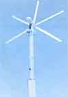
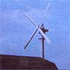
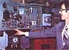

The Mehrkam Wind Turbine
May/June 1980
Our planet's "ocean of air" just might be able to provide all the energy your business needs.
Four decades ago, windplants were a common sight on North America's farms and homesteads. At present, however-mainly because of the efforts of the Rural Electrification Administration-the great majority of yesterday's draft-driven pumps and generators have been either disassembled or simply left to the mercy of the elements.
Naturally, there was no real problem with the wind-powered equipment . . . it's just that the then-inexpensive (and freshly installed) "grid juice" seemed to present a very attractive alternative at the time. These days, though, the advantages of utility power are becoming less obvious . . . and many folks, both rural and urban (yes, breezes blow in the cities, too!), are considering-or already have installed-their own wind-driven power systems.
Not long ago, MOTHER sent one of her editors to Hamburg, Pennsylvania to talk to Terry Mehrkam, founder of the Mehrkam Energy Development Company. Terry's firm is a small but growing operation that not only designs and markets truly "state of the art" windpower systems, but has actually been so successful at doing so that the demand for MEDC-designed equipment is outstripping the present supply.
Terry-who is best described as the firm's designer, engineer, and part-time maintenance crew . . . when he's not busy managing the business, that is-has some definite opinions as to how a wind generator should be built. The article that follows details both the Mehrkam system and the reasons for its success.
It should come as no surprise to anyone that countless people are scrambling for ways around the high price of energy . . . whether that power comes from oil, gasoline, or public utility lines. But-in their search for a "better way"-many folks are overlooking a time-tested, practical alternative: the wind.
One possible reason for the lack of interest in windplants is that-in times past-the use of "air power" was limited to areas of near-constant high winds, such as the Great Plains or North America's coastal regions.
These days, however, it's a different story. Even though the weather hasn't changed much, the available hardware has, and wind systems are coming into their own for several reasons: [1] Equipment reliability has improved substantially since the early days of windpower use. [2] Wind-driven generation plants are becoming quite cost-effective, and will prove to be even more so as public power costs increase with each year. [3] Thanks to the abovementioned advances in technology, many modern windplants can now be utilized even during minimal wind periods and are thus more practical than some of their fore runners. [4] "Down time"-for regular equipment maintenance and overhaul has been reduced to a bare-bones minimum through sound engineering.
A NEW TWIST TO AN OLD IDEA . . .
Since the "early" generators were, by and large, used only in extremely windy areas, the manufacturers designed their equipment to charge optimally at higher windspeeds (in the neighborhood of 18 to 20 miles per hour or more) . . . which meant that shaft RPM could range from 225 to over 900-depending on the unit-and blade tip speeds would often approach 180 MPH!
Now it doesn't take a degree in engineering to figure out that a piece of machinery running at such speeds will undergo severe stress . . . and that eventually the hub or blades-or some other moving parts-may very well fail.
With this reliability problem in mind, Terry Mehrkam set out-eight years ago-to develop a windplant that did not incorporate a "built-in" failure potential. Actually, the young designer had no intention of going into the wind energy business at all. . . he was merely searching for a way to reduce commercial power consumption in his father's manufacturing enterprise. "We made a lot of components for nickel plating," Terry explains, "and-even back in 1972-were using three to four thousand dollars' worth of electricity per year. So we were curious about the potential of wind turbines. I had-for years been-interested in aeronautical theory, airplane flight dynamics, and what not . . . and I was always a tinkerer by nature, so I designed and built my own wind turbine: a 10-kilowatt, two-bladed 25-footer."
Mehrkam's initial design attempt-though successful-didn't quite meet his requirements, because the machine just wasn't productive at low windspeeds. So, soon thereafter, he built a larger prototype, a 45-foot two-blader which would later serve as a guinea pig for various blade designs.
Not wanting to waste his time "reinventing the wheel", the Keystone Stater researched countless technical studies . . . in an attempt to hit upon the right type of airfoil and blade twist for his windplant. Unfortunately-primarily because his central Pennsylvania location experienced only average winds most of the time-none of Mehrkam's early blade designs performed as well as he had expected them to. "So I decided to try a four-blade model, and immediately found that the additional 'arms' resulted in smoother operation . . . it was a very passive machine when compared to the two-blader. The idea was to have at least one blade going through one quadrant at all times so that we wouldn't get into the stress, flex, and dynamic frequency problems which occur in units using fewer blades."
Of course, what Mr. Mehrkam had done, in effect, was to kill two birds with one stone: By incorporating two additional blades into his design, he came up with a smoother-running windplant and could shorten each blade while still reaping the same amount of power as that provided by the larger-span, two-bladed windplant .
. . . WITH EXCELLENT RESULTS
Spurred on by the obvious success of the four-blade design, Terry took the next logical step: He added yet another pair of airfoils to further reduce his machine's shaft speed and to make it even more productive at low windspeeds.
Again, his calculations proved correct . . . the new six-blade model not only ran smoothly-with a minimum of equipment stress and an easy-to-live-with 40decibel noise level output, as measured directly below the blades-but, even more important, charged in an unbelievably slight breeze. (After an initial 7MPH gust-which is what's required in order to get the machine rotating from a standstill-the Mehrkam windplant will continue to spin in air currents of as little as 2 MPH . . . with an effective charge being delivered in a 5-MPH wind. An 8MPH zephyr will produce as much as a kilowatt of power, and that figure is increased to between three and four kilowatts as windspeeds rise to 10-MPH.)
Obviously enough, in areas where average windspeeds are not great, an air-powered generator that can perform useful work ail year round has something to say for itself. Terry Mehrkam has since calculated that, under light breeze conditions, his six-blade model is about 15% more productive than was his own "fourfeather" design . . . and a whole lot more efficient than conventional windplants that might only begin to charge at 12 MPH or more!
THE ECONOMIC FACTOR
Naturally, a breeze-powered backyard plant isn't everyone's cup of tea (because of space limitations, nearby neighbors, and initial costs) . . . nonetheless, anyone considering an alternative source of power for individual (or group) residential-or small-scale commercial-applications should consider using the wind.
Besides the fact that MEDC's equipment can produce usable power from very little wind independent of the public utility grid if desired the costperkilo-watt of such a system, installed, currently averages about $650 . . . with some installations ( those that are used exclusively to provide resistance heating and thus don't require inverters, batteries, or other power-conditioning equipment) running as low as $550 per kilowatt, all told. When you compare such figures with the $1,000 (and greater) cost per kilowatt of the average utility, wind-powered electricity looks pretty good . . . not to mention the fact that such a generating setup can earn federal tax credits, increase the value of the property it's on, be a worthwhile investment in itself, and sometimes enable its owner to sell excess power back to the local utility!
DESIGNED WITH DEPENDABILITY IN MIND
Since Terry Mehrkam's original windplants were used to provide complete independence from the power company (though, to date, the majority of MEDC's customers are hooked into the utility lines . . . for reasons of backup convenience and/or economics), they were designed to be low-maintenance, high-reliability pieces of equipment.
A typical MEDC turbine assembly alone comprising blades, hub, driveshafts, transmission, generator, and exterior nacelle-weighs in at about 4,000 pounds . . . and is, to say the least, built to heavy-duty specifications.
Besides employing an oversized, helical-geared, fully sealed transmission-to absorb shocks better and guarantee reliability-Mr. Mehrkam uses roller bearings throughout each powerplant, and ties the hub to his 120-volt DC generator (or single or three-phase alternator, depending on the buyer's requirements) with oversize shafts, which incorporate two electrically operated disk brakes.
The blades themselves are of an extremely high-strength, low-flex extruded aluminum design, and are either coated with polyurethane or anodized to guarantee weather-ability. But better yet from a standpoint of practicality-the airfoils are mounted to the hub with special failsafe locks, which also allow blade pitch adjustment to be made. What this all boils down to is that each windplant can be "custom tuned" to its own particular site . . . to provide a high degree of efficiency throughout a wide range of local wind velocities.
The company's 7,000-pound tubular tower which will measure anywhere from 40 to 65 feet in length on the 40-KW windplants that MEDC markets-is constructed of 3/8" steel and has a diameter of 30 inches. Because the design is relatively "clean" and narrow when compared with open frame towers, the "wake effect" of air flowing around it is reduced drastically . . . and this, of course, adds to the overall effectiveness of the turbine, which is positioned downwind of the tower.
High-wind flex protection is provided by internal stringers which crisscross within the tube to a height of 20 feet from the base . . . while the bottom of the tower is set solidly into 20 cubic yards of buried concrete.
Since the needs of Terry Mehrkam's customers vary widely, his systems can differ with each installation. For example, at MEDC's Hamburg, Pennsylvania test site, a DC generator provides power-through a voltage regulator-to a series of ten 12-volt mining car batteries. These, in turn, feed a rotary inverter which provides 120-volt AC power to the Mehrkam household. In many applications, the use of a solid-state synchronous inverter has been found to be more practical (especially in installations with a utility company buy-back arrangement) . . . or-as in the case of most of MEDC's clients-the generator can be replaced with an alternator which naturally produces 120-volt AC service and is controlled through a solid-state panel.
The fact that the Mehrkam wind tur bine is essentially a one-speed machine makes power control much easier, too. Unlike many smaller, two-bladed windplants that work on a proportional basis (that is, an increased speed results in more power throughout the entire operational range), the MEDC generator is either coming up to speed or losing speed under normal wind conditions . . , and the optimum kilowatt capacity of any one of the company's windplants can be set for airspeeds of 25 to 35 MPH by adjusting the blade pitch and the shaft speed (which can be controlled via excitation of the generator).
Once the generator is excited to the voltage output at a given speed, it "locks onto" that RPM and shouldn't vary more than 10% overall. Of course, if a really severe blow should happen along, the rotor will automatically shut down at its "redline" of 60 RPM (the result of an approximately 40-MPH windspeed), though all the turbines are designed to withstand gusts of up to 120 MPH. Hence, in Mehrkam's designs, greater output is obtained by increasing the size-rather than the speed-of the blades.
THERE'S A FUTURE IN WIND
Even though wind power isn't practical for all of us, it's surprising just how many people could take advantage of this inexhaustible source of energy but don't realize it. Terry Mehrkam's rule of thumb states that a potential buyer who is consuming at least 20,000 kilowatt hours of power per year (and lives in a locale with an average annual windspeed of at least 9 MPH) might well consider a wind-driven powerplant.
Terry's experience also contradicts the idea that windplants are suitable only for rural areas. The Mehrkam Energy Development Company has sold a good number of machines in the past several years, and they're by no means all set up in the boondocks. One 225-KW installation-in fact-is located at an Allentown, Pennsylvania amusement park, and a smaller (40-KW) plant provides power for The Bronx Frontier . . . a community development group located in New York City. To date, Mehrkam has completed (or has contracted to build) installations in other parts of New York and Pennsylvania (where construction of a 2-megawatt unit is now in progress), plus New Jersey, Colorado, California, and as far away as Hawaii . . . where five plants are scheduled.
In all, the prospects of Mehrkam Energy Development Company-and windpower in general-look great ... and as the cost of conventional (and often nuclear-generated) power continues to rise, their future should become that much brighter.
EDITOR'S NOTE: If the prospect of reaping electrical power from the wind piques your interest, Terry Mehrkam does have available an owner's manual and information pamphlet-complete with specifications and a price list for all his models-for $8.00, postpaid. You can obtain. the packet by writing to Mehrkam Energy Development Company, Dept. TMEN, RD 2, Box 179E, Hamburg, Pennsylvania 19526.
|
 A 40-KW, six-bladed MEDC wind turbine provides power for Terry Mehrkam's rural Pennsylvania homestead. |
 The Ray Groff family of Bath, Pennsylvania has enjoyed nearly three years of breeze-supplied energy from this 12-KW Mehrkam windplant. |
 The control room for Terry's home-based wind generator. |
 The Bronx Frontier, a New York City-based community group, utilizes wind power in its very urban environment. |
|
|